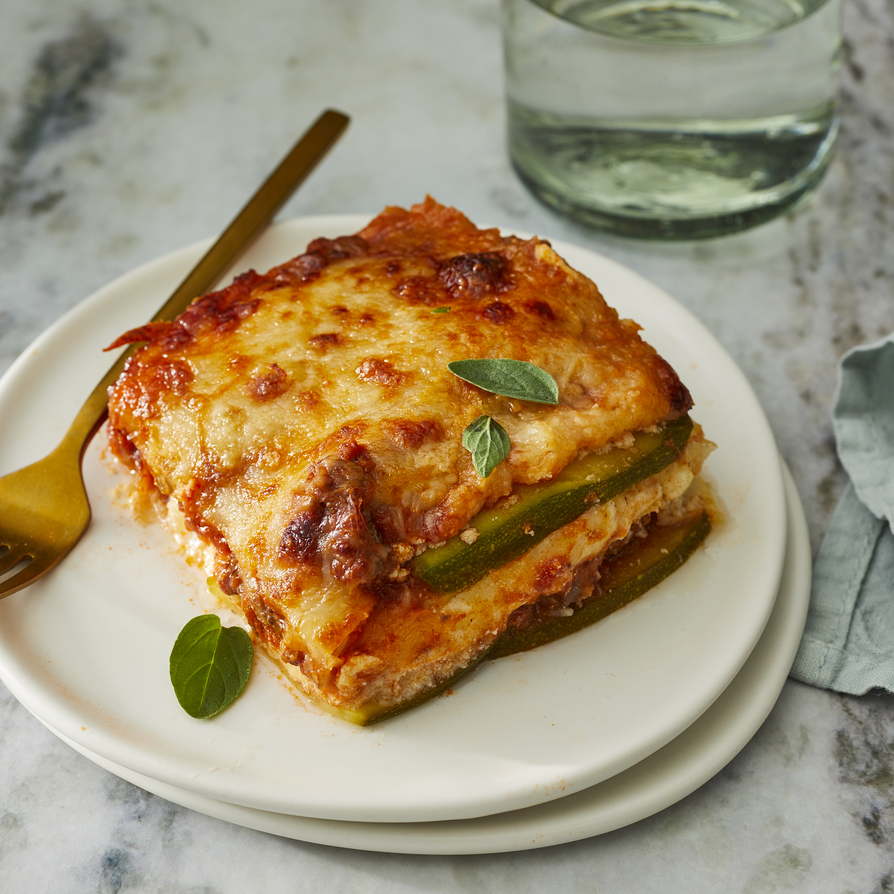

Ultimate Low-Carb Zucchini Lasagna

Description
Zucchini slices step in for pasta in this low-carb and gluten-free beef lasagna
that is delicious and satisfying; such a crowd pleaser!
See full recipe here: Allrecipes
Ingredients
- Cooking Spray
- 1.5 Large Zucchinis, thinly sliced lengthwise
- 1 tablespoon olive oil
- 1 pound ground beef
- 1.5 cups low-carb marinara sauce
- 2 teaspoons salt, divided
- 1 teaspoon dried oregano
- 0.5 teaspoon ground black pepper
- 1 (8 oz) container ricotta cheese
- 1 egg
- 0.5 teaspoon ground nutmeg
- 2 cups shredded mozzarella cheese, divided
- 0.25 cup grated Parmesan Cheese
Steps:
- Preheat oven to 375 degrees F (190 degrees C). Grease an 8-inch baking dish with cooking spray.
- Pat dry zucchini slices with a paper towel to get rid of excess moisture.
- Heat olive oil in a saucepan over medium-high heat. Add ground beef; cook until browned, 5 to 8 minutes. Add marinara sauce, 1 teaspoon salt, oregano, and pepper; simmer for 10 minutes.
- Combine remaining 1 teaspoon salt, ricotta cheese, egg, and nutmeg in a bowl; mix well.
- Make 1 layer of zucchini slices in the prepared baking dish. Cover with 1/2 of the sauce. Add another layer of zucchini slices. Spread ricotta mixture on top. Sprinkle with 1 cup mozzarella cheese. Add another layer of zucchini slices; cover with the remaining sauce and top with 1 cup mozzarella cheese and Parmesan cheese. Cover baking dish with aluminum foil.
- Bake in the preheated oven for 30 minutes. Remove aluminum foil and bake until top is golden, about 15 minutes more.
Nutrition Facts
Per Serving:424 calories; protein 30.4g; carbohydrates 14.9g; fat 26.8g; cholesterol 117.4mg; sodium 1426.6mg.